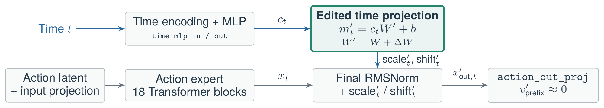
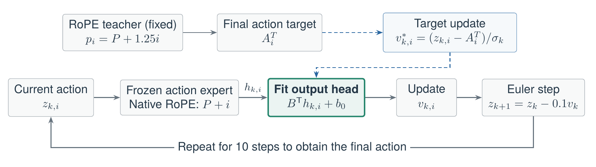
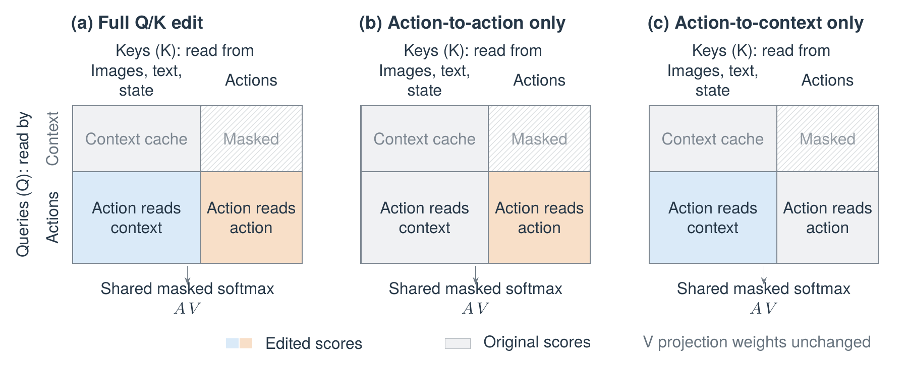

1 Our Idea and Research Setup#
We asked whether a Frontier Model could understand the parameters of a trained robot policy and, through a small number of edits, make the robot execute actions and complete tasks faster. We gave this problem to Opus 5.5, asking it to derive weight changes from mechanisms and objectives.
We provided the objective and environment; Opus 5.5 proposed hypotheses, designed experiments, and selected a solution. It worked through Claude Code with one NVIDIA GeForce RTX 4090, a trained
We prohibited backpropagation, gradient-based optimizers, and LoRA, while allowing forward-pass experiments and closed-form fitting. We asked it to change as few parameters as possible, preserve the production inference and control programs, and deliver an independent checkpoint that could be rolled back. A 20%–30% reduction in task time was the exploratory target; a stable 5%–10% improvement would also be meaningful. It needed to check smoothness and cross-task behavior, and compare against the original policy, action-amplitude scaling, trajectory time scaling, and random weight edits.
The resulting method developed through mechanistic hypotheses, controlled experiments, and revisions. We are interested not only in performance after editing, but also in how Opus identified problems, tested explanations, and changed direction after failure. Section 2 presents its research process; Section 3 reports our additional real-robot and mechanistic experiments. We close by considering what this case suggests about AutoResearch in robotics.
Here, an action chunk is a policy prediction of 50 future action steps. Each action step contains 12 joint targets for the two arms and 2 gripper targets. The baseline action execution rate is 30 Hz; Section 3.1 also tests 35 and 40 Hz. We execute 32 steps per cycle. When updating the plan, the first 6 steps of the old plan serve as conditioning actions, or the RTC prefix. We call an abrupt change in target position at a plan switch a chunk jump; this describes a change in commands, not an instantaneous movement of the physical arm.
2 Opus 5.5’s Hypotheses, Experiments, and Solution#
2.1 Locating the Opportunity: Inference Waiting or Action Execution?#
Opus 5.5 first checked whether task duration was dominated by waiting for model inference. It read the deployment configuration and compared inference times, action commands, and measured joint states across 136 historical RTC trajectories. Each inference took approximately 105–109 ms, substantially less than the roughly 1.073 s plan-update period. The recordings also showed no obvious idle intervals dominated by waiting for the next inference. It then used action speeds and pauses in 154 demonstrations as a reference and turned to the actions generated by the policy.
This diagnosis focused the investigation on saving time during action execution. Opus 5.5 pursued two lines of inquiry: first, whether anomalies at old-to-new chunk transitions originated in generation; second, whether subsequent actions could advance farther while preserving the task path. The first led to prefix repair, and the second to tempo acceleration through a Q/K projection edit; we refer to their combination as the combined edit.
2.2 Repairing Chunk Jumps in the Retained Action Prefix#
By comparing model outputs with executed commands, Opus 5.5 found that the first 6 steps were supplied as conditioning actions, but the generated outputs deviated from those old actions. Deployment usually discarded only the first 4 expired steps, so deviations in steps 5 and 6 entered execution. The cause was that the prefix was not restored again after the final flow-matching integration step.
Opus 5.5 computed a weight-update matrix final_norm_1.Dense_0.kernel). The

The original time-modulation process is shown in Figure 1, using time_mlp_in/out map action_out_proj, with
Step 1: choose targets that give zero prefix updates. Primes denote edited quantities. Opus targeted scale
Step 2: compute the target modulation change. Subtracting original values from targets gives
Write the weights and check the effect. The desired change after applying the new weights is
Across 36 demonstration observations and 24 historical execution observations, the prefix joint error fell from approximately 0.095 rad to
2.3 The Action-Tempo Hypothesis and RoPE Position Intervention#
The prefix repair did not make subsequent actions advance faster. While reading the model code, Opus 5.5 proposed a hypothesis for acceleration: “My leading hypothesis is that action timing depends on RoPE positions.” We elaborate on this hypothesis as follows: the model may have learned an implicit relationship between action-position spacing and action displacement; increasing the internal position spacing while keeping the physical control interval unchanged may increase useful displacement over the same duration.
Figure 2 summarizes the intervention: change the coordinates used to read the action sequence, then test whether predicted actions advance faster.

Implementation: change the Q/K rotations associated with action positions.
Let
Test: does the position intervention increase progress along the original route?
Opus 5.5 ran two sets of controls: (1) on 36 demonstration observations and 24 historical rollout observations, it changed action positions in all 18 layers to
It first resampled the original predictions at different speeds and found the speed that most closely matched the intervened joint trajectory. The RoPE intervention with
Opus 5.5 then tested: at the same action step, does the edited model move farther along the route planned by the original model? At a fixed action execution rate, the same step corresponds to the same elapsed execution time. It performed forward kinematics and connected the positions of the original TCP poses into a reference route. Each edited position was matched to the nearest point on that route. Dividing the cumulative distance along the route to that point by the original model’s distance at the same action step gives the path-progress ratio; the mean nearest distance from edited positions to the route gives the path deviation (Figure 3).

The calculation excludes the first six conditioning steps. Let
Table 1. Position scaling versus prefix acceleration. Opus 5.5 saved per-sample metrics; we report medians over eligible observations: 58 of 60 inputs in the RoPE group and 34 of 36 in the prefix group.
| Intervention | Scale | Eligible observations | Progress ratio | Path deviation |
|---|---|---|---|---|
| Action RoPE | 0.80 | 58 | 0.851 | 0.793 |
| Action RoPE | 1.25 | 58 | 1.131 | 1.229 |
| Action RoPE | 1.50 | 58 | 1.175 | 1.935 |
| Action RoPE | 2.00 | 58 | 1.009 | 4.674 |
| RTC prefix time compression | 1.25 | 34 | 1.004 | 0.492 |
| RTC prefix time compression | 1.50 | 34 | 1.004 | 0.796 |
| RTC prefix time compression | 2.00 | 34 | 1.007 | 1.134 |
Table 1 shows that
Opus 5.5 selected
2.4 First Attempt: Fit Only the Final Action Output Layer#
The minimal-change test: can editing only the last layer reproduce the teacher’s final actions? The original output weight is

Reconstruction on fitting inputs and transfer to new inputs were checked separately. Let
After three fitting rounds on 24 demonstration observations, joint RMS was 0.0050 rad. On another 12 demonstration and 16 historical rollout observations, the error increased to 0.0239 rad, mean path deviation was 8.256 mm, and the jerk ratio was 3.245. Reconstruction quality did not carry over to the test inputs, so Opus 5.5 abandoned output-head fitting and turned to the attention layers.
2.5 Moving Inside Attention: Fitting Q/K Projections#
Opus 5.5 moved the fitting target from final actions to Q/K representations: a known rotation directly supplies the targets, which the new weights approximate (Figure 5).

Step 1: construct intermediate representation targets. To retain the candidate’s native RoPE
Step 2: collect features and fit a closed-form solution. Opus 5.5 first checked whether the feature-collection forward pass altered the original output. Joint RMS was approximately 0.00037–0.00044 rad, below its chosen tolerance of 0.002 rad. It transposed the column vectors, using
Step 3: inspect generated actions and refine the fit. The initial fit edited Q/K in all 18 layers. After two rounds, normalized action RMS against the teacher on fitting observations fell from 0.03694 to approximately 0.00298. This measured final actions, not Q/K feature errors. The refined fit preserves layer 0 and fits only layers 1–17; its corresponding teacher also changes RoPE only in those layers. The rationale was that layer 0’s inputs have not yet undergone action-attention mixing and may lack the information needed for a shared projection to distinguish action indices.
Step 4: validate the refinement on held-out observations. The tempo edit used 48 observations from 12 demonstrations and 12 historical rollouts for fitting, reserving another 36 time points for testing. The time points do not overlap, but come from the same trajectories. After three fitting rounds, on the shared test set, the progress ratio increased from approximately 1.17 for the initial version to 1.20, deviation fell from 1.26 to 1.08 mm, and the jerk ratio fell from 1.47 to 1.37. Opus 5.5 therefore retained the tempo edit and proceeded to test edit strength and its combination with prefix repair.
2.6 Adding Parameter Constraints and Testing the Combination with Prefix Repair#
Opus 5.5 controlled the fitted change with an editing strength
It then compared prefix repair, tempo edit, and their combination on the same 36 test observations, adding trajectory time scaling and action-amplitude scaling as baselines, both with a factor of 1.21445. The path and jerk metrics in Table 2 include 35 valid observations. The chunk-jump metric is the maximum adjacent TCP displacement around the splice between the first 4 steps of the old plan and steps 5–13 of the new plan, taking the larger value across the two arms. It includes ordinary displacement between adjacent actions.
Table 2. Offline comparison on identical test inputs. All metrics are medians; progress, deviation, and jerk use 35 valid inputs, and chunk jump uses 36. A progress ratio of 1.214 means advancing farther along the original path in the same time, not a 21.4% reduction in successful task completion time.
| Method | Progress ratio | Deviation (mm) | Jerk ratio | Chunk jump (mm) |
|---|---|---|---|---|
| Original | 1.000 | — | 1.000 | 44.223 |
| Prefix repair only | 1.000 | 0.178 | 1.004 | 5.822 |
| tempo edit only ( |
1.199 | 1.076 | 1.367 | 41.453 |
| Combined edit | 1.214 | 1.071 | 1.363 | 5.442 |
| Trajectory time scaling | 1.257 | 0.038 | 0.827 | 44.223 |
| Action-amplitude scaling | 1.054 | 4.870 | 1.217 | 53.529 |
The combined candidate increased path progress and reduced chunk jumps, but its within-chunk jerk ratio rose to 1.363. Time scaling had lower deviation and jerk, but retained the original chunk jumps. A random weight direction produced 24.05 mm path deviation and a jerk ratio of 31.07, failing to preserve the original behavior. Opus 5.5 ultimately selected the combined edit with
2.7 Deliverables and Research Cost#
After checking saving, rollback, and native reloading, Opus 5.5 delivered an independent checkpoint that modified 1.16% of all model parameters. All 8 test inputs produced valid outputs. Its initial research run took 1 hour, 50 minutes, and 42 seconds, with 193 tool calls (163 Bash, 18 Write, 8 Read, and 4 others) and 187 API requests. Usage records were available for 181 requests, totaling 184,614 output tokens, with 433,426 cache-write tokens and 36,783,281 cache-read tokens. The 6 requests without usage records are not counted as zero; cache reads include repeated context. These figures exclude subsequent real-robot analysis and preparation of this article.
3 Our Follow-up Experiments and Analysis#
We next measured actual task time and chunk jumps, and analyzed internal effects through attention-region interventions and prefix-handling controls. These are our additional experiments and are not included in the cost of Opus 5.5’s initial research run.
3.1 Real-Robot Experiments: Task Time and Action Quality#
We compared the original Training-Time RTC policy with the combined edited policy (
We kept both checkpoints fixed and shortened only the execution interval between action points, without an additional RoPE intervention or weight fit. The 32-step execution setting, six-step conditioned prefix, and 100 Hz low-level control loop stayed fixed; the same number of steps therefore spans less physical time at higher rates.
Table 3. Execution-rate comparison under the same layout. Each condition contains 3 successful trials; times are mean
| Rate | Original RTC (s) | Combined edit (s) | Time reduction |
|---|---|---|---|
| 30 Hz | 4.3% | ||
| 35 Hz | 7.4% | ||
| 40 Hz | 12.0% |
Increasing the execution rate accelerated both policies, while the edited policy retained an additional benefit at all three matched rates. In Table 3, the edited policy at 35 Hz approximately matched the original at 40 Hz. When both ran at 40 Hz, the edited policy still finished 2.15 s earlier on average. This supports a change in how the policy generates actions whose benefit can combine with faster execution. Consistency here means a benefit at every tested rate, not an identical effect size.
Chunk jumps decreased at all three rates; the overall mean fell from 30.88 to 3.14 mm, a reduction of 89.8%. We used the same calculation throughout: between formal start and the fourth bottle release, locate adjacent command ticks across each plan switch, compute their TCP distance with forward kinematics, and take the larger value across the two arms. We average within each trial, then equally across the three trials per condition. Initial plan entry and transitions through an empty plan are excluded. This metric measures the command step at a switch. Table 4 reports each rate; the aggregate weights all three rates equally rather than averaging percentage reductions.
Table 4. Mean chunk jump at each execution rate. Each policy-and-rate condition contains three successful trials, using the same completion endpoints as the timing analysis; nine trials per policy in total.
| Rate | Original RTC (mm) | Combined edit (mm) | Reduction |
|---|---|---|---|
| 30 Hz | 26.23 | 1.43 | 94.5% |
| 35 Hz | 33.39 | 3.09 | 90.7% |
| 40 Hz | 33.01 | 4.89 | 85.2% |
| Equal-rate mean | 30.88 | 3.14 | 89.8% |
Faster execution also comes with larger residual chunk jumps. For the edited policy, mean jump rises from 1.43 to 3.09 and 4.89 mm at 30, 35, and 40 Hz, while the reduction relative to the original narrows from 94.5% to 90.7% and 85.2%. The edited policy still has substantially smaller command jumps at each matched rate, but the results reveal a trade-off between execution speed and command continuity.
Per-trial completion times from the earlier 30 Hz cohort appear in Table 5; Table 6 further reports action quality for those six 30 Hz recordings.
Table 5. Successful bottle-placement completion times at 30 Hz under the same layout. Each group contains 3 executions; the mean is followed by the sample standard deviation. Repeat numbers indicate order within each group, not randomized pairing.
| Repeat | Original RTC (s) | Combined edit, |
|---|---|---|
| 1 | 22.69 | 20.45 |
| 2 | 22.17 | 21.87 |
| 3 | 22.41 | 22.05 |
| Mean |
The edited policy finished 0.96 s earlier on average, a 4.3% reduction in time. This compares three successful executions per policy under the same layout and does not estimate a change in success rate.
Within the same completion interval of those six 30 Hz recordings, we computed the TCP distance between adjacent commands at every plan switch, taking the larger value across the two arms. We then computed statistics per trajectory and averaged them over the three trajectories in each group (Table 6). The original and edited groups contained 60 and 58 switches, respectively; the initial entry into a plan was excluded.
Table 6. Action quality over the same six successful recordings and completion intervals. Each metric is calculated per trajectory and then averaged with equal weight over the 3 trajectories per group. “Maximum” denotes the group mean of per-trajectory maxima.
| Metric | Original RTC | Combined edit | Reduction |
|---|---|---|---|
| Mean chunk jump (mm) | 26.23 | 1.43 | 94.5% |
| Mean of per-trial jump P95 (mm) | 43.57 | 4.53 | 89.6% |
| Mean of per-trial maximum jump (mm) | 51.49 | 5.87 | 88.6% |
| Command jerk P95 (m/s |
1040.40 | 234.78 | 77.4% |
| Mean end-effector tracking error (mm) | 19.59 | 19.17 | 2.1% |
Mean chunk jump decreased by 94.5%, while end-effector tracking error remained almost unchanged. The command jerk P95, computed from third-order differences of the complete command trajectory at 30 Hz, also decreased by 77.4%. It includes improvements at plan switches, unlike the offline jerk metric that measures only within-chunk behavior.
(2) Coin insertion: the speedup occurred mainly during transport after grasping. We divided the action into stages using sustained closing and opening events in the measured gripper states. Table 7 shows that the total time from left-gripper closure to handover release fell from 5.85 s to 4.64 s, a 20.7% reduction. Within this interval, the transport stage from left-gripper closure to right-gripper closure shortened by 22.1%; the time from the start to grasping and the time spent releasing during the handover were almost unchanged.
Table 7. Stage durations for coin insertion under the same layout, with 3 executions per policy. Values are group means. Stage boundaries come from measured gripper states; the start is the first valid plan tick of formal execution. The final row sums the two middle stages.
| Stage | Original (s) | Edited (s) | Time reduction |
|---|---|---|---|
| Approach/grasp: start to left closure | 8.034 | 8.039 | |
| Transport: left to right closure | 5.451 | 4.245 | 22.1% |
| Handover release: right closure to left opening | 0.399 | 0.396 | 0.7% |
| After grasp to handover release (total) | 5.849 | 4.641 | 20.7% |
The 20.7% measures the reduction in the stage from grasping to handover release, which we report separately from the full-task completion time in the bottle experiment.
(3) Block stacking: no clear speedup was observed. All 3 tests in each group ultimately succeeded, giving 3/3 successes for both policies. In the original policy’s second execution, a failed stacking attempt was followed by a new grasp and successful completion, resulting in a longer total time of 28.27 s. Table 8 retains the completion times of all six executions. To compare execution speed without retries, we exclude that run when computing the mean. The remaining 2 original runs and the 3 edited runs averaged 19.46 and 19.28 s, respectively: a reduction of only 0.19 s (approximately 1.0%), with overlapping individual durations.
Table 8. Block-stacking completion times under the same layout. Timing runs from the start of formal execution to video confirmation that the final block has been released and is supported by the stack below.
| Repeat | Original RTC (s) | Combined edit (s) |
|---|---|---|
| 1 | 19.42 | 19.56 |
| 2 | 19.00 | |
| 3 | 19.50 | 19.26 |
| Mean (excluding retry) | 19.46 ( |
19.28 ( |
| Final successes (all tests) | 3/3 | 3/3 |
These real-robot results show that Weight Editing did produce gains in our tasks: bottle placement became faster with smaller chunk jumps, and the transport stage in coin insertion also accelerated. However, this remains an initial attempt, with limited speed gains. This is consistent with the hypothesis and offline results in Section 2.3: the learned relationship between action positions and displacements may provide a way to adjust the pace of actions.
3.2 Repairing Prefix Consistency in Parameter Space#
Unexpectedly, prefix repair brought our attention to a bug left unhandled in the official public Training-Time RTC (TT-RTC) code: when actual latency is shorter than the preset prefix, conditioning actions modified by the final integration step may still enter execution. We first briefly introduce TT-RTC.
TT-RTC addresses how a robot can keep moving while waiting for inference of the next chunk and then switch smoothly to that chunk. The top row of Figure 6 shows the remaining actions
![Switching from the old chunk to the new one. The top row shows the old plan’s remaining actions when computation starts; the first six are used as conditions. The three rows below show returned action sequences, with arrows marking where execution resumes after the switch. Gray positions are discarded, and asterisks indicate modifications left by the final sampling integration step. (a) A six-step wait: the old plan reaches \(A_6\) , then switches to \(B_7\) . (b) A four-step wait: the old plan reaches \(A_4\) , but switches to modified \(A_5^*,A_6^*\) (red). (c) After repair, the switch still occurs after \(A_4\) , but continues with unchanged \(A_5,A_6\) (green), followed by new actions \(B_7,B_8\) .](../assets/prefix-return.png)
Figure 6(b) shows the problem when the result returns early. Model computation takes only four action steps, and the robot has reached only
For deployments requiring IK, we typically reserve a conservatively longer prefix to cover solver-latency fluctuations. Larger fluctuations can also create a larger gap between this reserved length and the latency of a particular inference call. When a result returns early, more conditioning actions remain to be executed. The original OpenWAM [6] implementation uses Mink differential IK wrapped by i2rt, solving quadratic programs (QPs) iteratively. Action decoding, including IK, has a median duration of 22.9 ms and a maximum of 921.2 ms. The subsequently used DLS gate adjusts motion regularization according to the Jacobian’s smallest singular value and limits joint changes; its duration still ranges from a median of 49.3 ms to a maximum of 177.7 ms.
Figure 6(c) shows the repaired transition: even when the new result arrives after final_norm_1.Dense_0.kernel. Under the current setup, its effect is nearly equivalent to executing actions[:6] = condition[:6] before returning: restoring the first six steps to the supplied old actions. Opus approximated this operation by editing parameters.
We subsequently added controls on the same 36 observations (12 local demonstration observations and 24 historical rollout observations), fixing random seeds and sampling steps. We compared shortening the conditioning prefix, using prefix repair alone, and directly restoring the prefix, all without the tempo edit.
Table 9. Prefix-handling controls on 36 identical observations, assuming four steps are discarded in execution. The transition-step distance is the TCP distance from step 4 of the old plan to step 5 of the new plan, taking the larger value across the two arms and then the median across samples. Subsequent-action difference is the RMS relative to the original model over steps 7–38 and 12 joints, averaged across samples.
| Method | Transition step (mm) | Subsequent difference (rad) |
|---|---|---|
| Original, 6-step conditioning | 19.158 | 0.000000 |
| Original, 4-step conditioning | 4.930 | 0.002228 |
| Prefix repair only, 6-step conditioning | 1.798 | 0.000375 |
| Code fix: restore 6 steps before return | 1.885 | 0.000000 |
Table 9 shows that, compared with the original 19.16 mm, the prefix weight edit and the code fix that directly restores the prefix reduce the median transition-step distance to 1.80 and 1.88 mm, respectively, with very small changes to subsequent actions. This supports their approximate equivalence for prefix repair. Shortening the conditioning prefix to four steps also improves this particular comparison, but does not eliminate the same issue when actual latency is shorter than the conditioning length.
By editing time-modulation weights to make updates to the conditioning prefix close to zero, Opus repaired in parameter space a bug left unhandled by the official public code: when actual latency is shorter than the preset prefix, conditioning actions altered by sampling updates may still enter the execution sequence. This prefix protection is especially important for deployments requiring IK, where a margin must be reserved for latency fluctuations. We did not specify this defect; Opus discovered it during its research and produced a parameter-level repair under the constraint of leaving inference code unchanged.
3.3 Mechanism Analysis: Which Attention Changes Preserve the Progress Gain?#
We compared the original model, the direct RoPE teacher, and the tempo-edited model on the same eight bottle-task observations, fixing the initial noise, RTC conditions, and number of sampling steps, with prefix repair disabled. First, the tempo-edited model’s attention to context was closer to the teacher’s: its distributional distance, measured by JSD, was 0.00173, below its distance of 0.00792 from the original model (lower means more similar). This supports that fitting preserved part of the position intervention’s internal effect.

Figure 7 marks two regions: the lower-right block contains actions reading actions, and the lower-left block contains actions reading images, text, and state. At each layer, using the same current hidden features
Table 10. Effects of attention-route interventions on predicted actions, reported as medians over eight inputs. Progress is measured along the original path at steps 21 and 37. All variants use the same arms, selected by at least 15 mm of cumulative motion in the original predictions. Prefix repair is disabled throughout, and jerk is measured within chunks. These are geometric quantities of offline plans, not measured completion times.
| Intervention | Progress at 21 | Progress at 37 | Deviation (mm) | Jerk ratio |
|---|---|---|---|---|
| Original | 1.000 | 1.000 | — | 1.000 |
| Direct RoPE teacher | 1.203 | 1.101 | 1.012 | 1.105 |
| Full tempo edit | 1.227 | 1.140 | 1.028 | 1.289 |
| Action-key scores only | 1.178 | 1.087 | 1.100 | 1.249 |
| Image and prompt/state scores only | 1.057 | 1.039 | 0.484 | 0.981 |
Table 10 shows that the step-37 progress ratio changes from 1.140 with the full tempo edit to 1.087 with the action-only intervention and 1.039 with the context-only intervention. Intervening on scores between actions preserves more of the offline progress gain.
Closing Thoughts#
We expected a moment of magic: Claude would intuitively change a few weights, and the robot would move faster. That is not what happened. We believe the key to this Weight Editing result was the Frontier Model’s AutoResearch ability: understanding mechanisms, finding problems, testing hypotheses, and revising its approach after failure. Its understanding of parameter space made the edits possible; the research process helped it find edits worth making.
This raises a more important question: as Frontier Models increasingly internalize robotics knowledge, how will the next generation, and the generations beyond it, change the way we ask questions, test ideas, and advance research? This case cannot yet provide an answer, but it makes these questions concrete and leaves us excited about what comes next. As models take on more exploration and validation, we need to think more carefully: how can we distill robotics needs into research tasks suited to AutoResearch? And how can we identify more meaningful scientific or engineering problems?
We hope this article offers a glimpse into research on Frontier Models for Robotics.
References
Rikiya Takehi, Jayden Teoh, Alex Zhang, Omar Khattab. Sparks of Weight-Space Programming: LLMs can natively read & write neural network weights. MIT CSAIL, 2026. https://rikiyat.github.io/blog/weight-space-programming/.
Physical Intelligence et al.
Jianlin Su et al. RoFormer: Enhanced Transformer with Rotary Position Embedding. arXiv:2104.09864. https://arxiv.org/abs/2104.09864.
Kevin Black, Allen Z. Ren, Michael Equi, Sergey Levine. Training-Time Action Conditioning for Efficient Real-Time Chunking. arXiv:2512.05964v2. https://arxiv.org/html/2512.05964v2.
Physical Intelligence. real-time-chunking-kinetix, commit
9296f31d62d5. https://github.com/Physical-Intelligence/real-time-chunking-kinetix. We inspectedsrc/model.pyandsrc/eval_flow.py.Yuran Wang et al. OpenWAM: An Open, Modular Exploration Towards Systematic World-Action Model Pretraining. arXiv:2609.07398, 2026. https://arxiv.org/abs/2609.07398.
BibTeX
@misc{gong2026roboticsweightediting,
author = {Gong, Ziyang and Zheng, Kaifeng and Huang, Yingrui and
Chen, Wendi and Tian, Jiaguo and Yang, Junkai and
Liu, Minghuan and Yang, Zhenjie},
title = {{We Asked Opus-5.5 to Edit $\pi_{0.5}$'s Weights.
AutoResearch Made It Happen.}},
year = {2026},
url = {https://cuzyoung.github.io/robotics-weight-editing/en/}
}